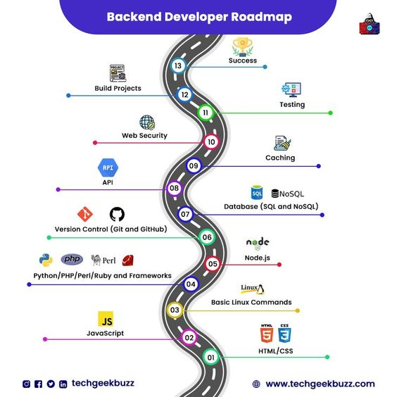

Frontend Development
Project to study the three core elements of frontend programming. HTML, CSS3 and Javascript and produce an online reference. Go to the Frontend Programming Reference

Project to study the three core elements of frontend programming. HTML, CSS3 and Javascript and produce an online reference. Go to the Frontend Programming Reference
Data and the API's to access it are a big part of the backend. Add on languages and platforms and you are talking a lot of stuff to know. The project to study the elements of the backend and produce an online reference for programming the backend. Go to the Backend Programming Reference
So many tools for programmers, which to pick?
These are the tools I use. Once I learn a tool I stick with until I hit the frustration boundary. Only then do I upgrade to something more modern. Why donm't I keep up with the latest tools often? Simple answer is, switching costs!

Where to start?
Capture your brand in its design style for the web
Breakdown!!
What a process? Build a wireframe of the elements. Pick a color pallette. Photo up the images. Architect the used experince flows. Ride the merry go around of build and test and trial until exhausted. Publish and hope for the best!
Roadmap.sh is a community effort to create roadmaps, guides and other educational content to help guide developers in picking up a path and guide their learnings. Go to the external roadmap site
This community will help you learn to code and get a developer job. Go to the external freecodecamp site